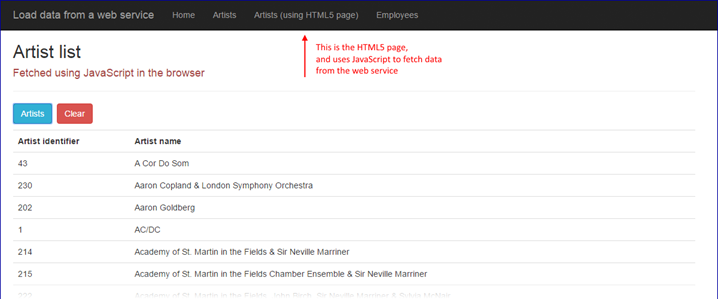

INT422 – Lecture 12 Part 2
Bonus coverage – load data from a web service.
Code examples
WebServiceExample
LoadDataFromWebService
Bonus coverage – Load data from a web service
Some students have asked about loading data (e.g. JSON) from a web service. Learn how in this section.
Fetching JSON from a web service – design considerations
When designing a solution that will fetch JSON from a web service, you will realize that it is possible to perform the fetch by using JavaScript in the browser, or by using server-side code.
Which to use?
The answer is determined by the intended use of the JSON. If you want to create objects that will be used in the controller or manager, or saved in the data store, we recommend that you use server-side code. Otherwise, you can use JavaScript.
Fetch JSON using JavaScript
The Week 11 code example AjaxWithWebService implements this use case.
A new Week 12 code example LoadDataFromWebService also implements this use case, in its “ArtistsHTML5Page.html” page and linked script. Click the image to open it full-size in a new tab/window.

Fetch JSON using C# (Manager class and controller classes)
As noted above, this use case is for situations where you need to work with the data in the controller or manager, or you need to save the data in the data store.
Open two code examples as you work through this section:
The WebServiceExample publishes data from the Chinook music business database. Artists and employees. Start and run that app so that it is running on your computer’s per-instance on-demand web server.
Click the image to open it full-size in a new tab/window.
Study the code. Its Manager class methods are similar to others you have written. Its Artists and Employees controllers are Web API controllers, which will return JSON (or XML) data.
The LoadDataFromWebService code example is a standard ASP.NET MVC web app, and has Manager class methods which call out to the web service. Every programming platform has an object that can make an HTTP request and handle its response. In your ASP.NET MVC apps, you can use the HttpClient class to do this work.
In the Manager, there is a custom “factory” method that creates an HttpClient object. Each data-fetching method uses the factory to create a custom object.
Notice also the use of the async-await pattern. When doing any task that has the potential of running for a long time, or not completing at all, you should use the async pattern. For this task, we do not know if – or when – a response will come back from the web service. When we use the async pattern, the task is done in the background, while the foreground task – whatever that is – remains running. There’s a simple recipe for using the async pattern, for most simple situations:
When calling an async method, prefix the method call with the await keyword.
When writing an async method,
Notice that the methods still return an object or collection (as the type in Task<T>) that’s based on a view model class. Yes, we still continue to use all that we have learned in the past.
Load the web app, and the list of artists. Data comes from the web service. Click the image to open it full-size in a new tab/window.
Click any artist to see its details. Data comes from the web service. Click the image to open it full-size in a new tab/window.
Load the list of employees. Data comes from the web service. Click the image to open it full-size in a new tab/window.
Click any employee to see its details. Data comes from the web service. Click the image to open it full-size in a new tab/window.
Work on Assignment(s)
Your professor will be available in the computer-lab room during the normal class/session time slot.
{kind=link}
{kind=link}
{kind=link}
{kind=link}
{kind=link}